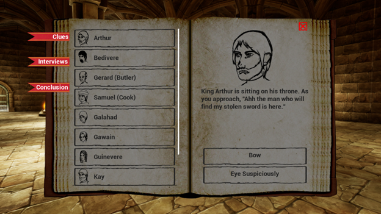
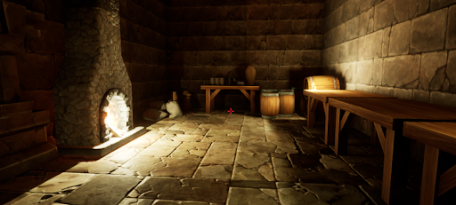
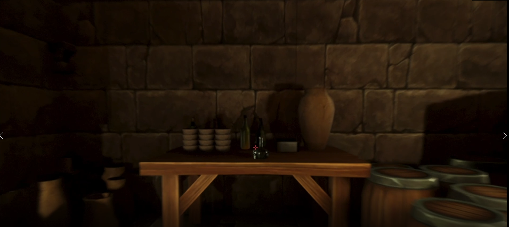
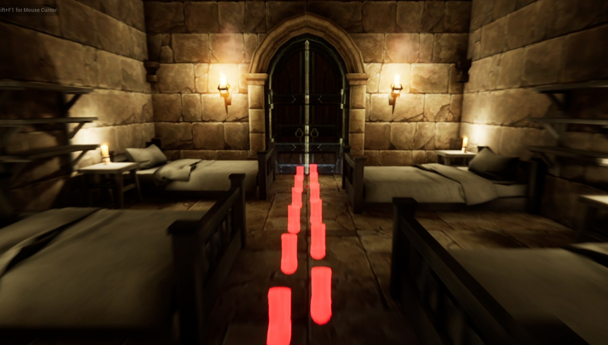
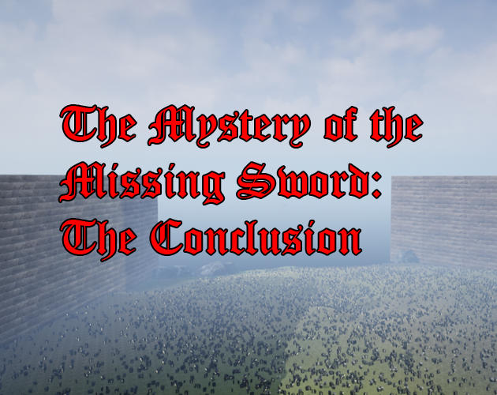
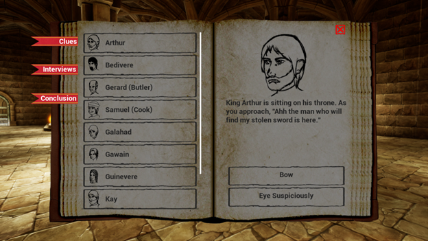
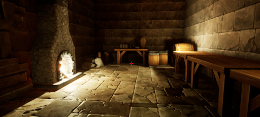
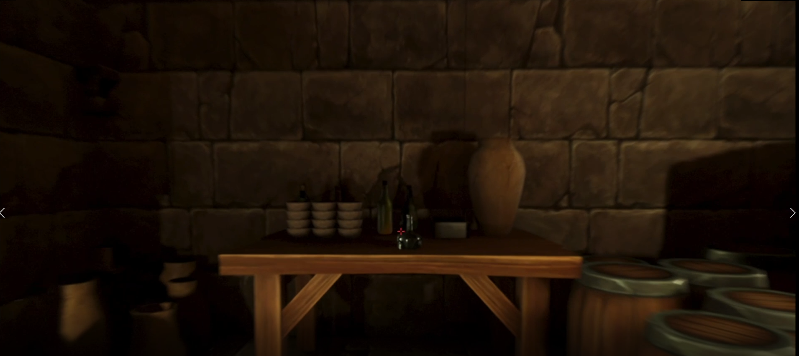
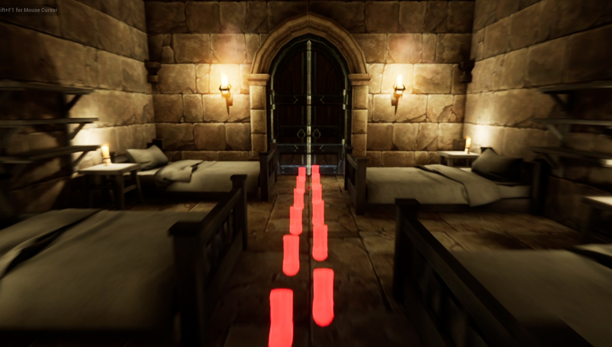
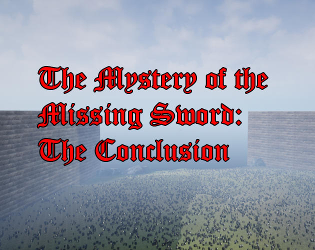

I was the lead of a group for this detective game that I did in one of my video game classes. I made the interaction system, many assets (character art, clue art, some 3D models, book art for journal), and did some level editing.
In this game, the player is a detective working for King Arthur. His sword is missing and it is up to the player to determine what happened. Players collect clues and interview witnesses (or suspects) to help make their decision. There are two modes in this game: the first person 3D map and the journal.
Physical clue collection is done in the 3D map. Players can simply walk around and click on clues to collect them. There are some clues that unlock tracking--visible footprints that lead to another clue, particularly in areas the player may not have thought of looking. This tracking can also show that some clues are connected.
There are three things that can be done in the journal: interview witnesses, look at discovered clues, and make a conclusion. Each of these has its own tab. To interview characters, the player will simply click on the Interviews tab, then the character that they wish to talk to. Players must be careful with their responses to certain characters, however. Some conversation paths will lead to more information given than others. The clues tab is there to help the player remember clues--physical or from interviews. The conclusion tab is for when the player is ready to form a conclusion. Once the player continues after the prompt, they cannot exit the journal and must complete the questions to win the game